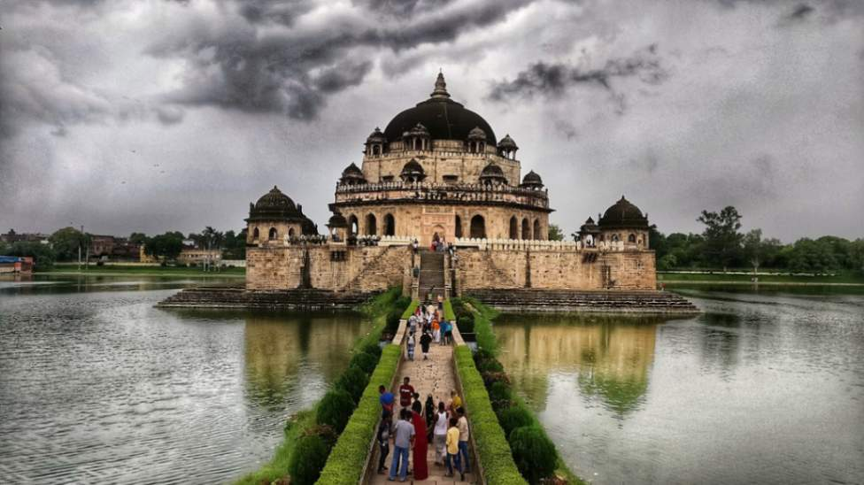

About Us
Village Tour India is an initiative to bring you closer to the real heart of India — its villages. We promote sustainable rural tourism by connecting travelers with local communities, traditions, and lifestyles that often go unnoticed.
Our Mission
We aim to preserve the cultural heritage and natural beauty of rural India while empowering local people through tourism. Our tours help support village artisans, farmers, and families by generating income and increasing awareness.
What You’ll Discover
- Authentic village life experiences
- Traditional Indian crafts & folk art
- Organic farming and food preparation
- Beautiful landscapes, rivers, and fields
- Local festivals, music, and dances
Featured Village: Rohtash, Bihar
Rohtash is a serene village located in the heart of Bihar, known for its vibrant culture, handcrafted pottery, and warm hospitality. Visitors can enjoy camel rides, cook with locals, and participate in age-old ceremonies.
